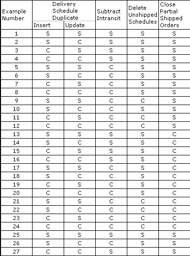

When working with the Subtract Intransit Quantity setting, it is important that you understand how the setting affects the final quantity.
To understand how VISUAL handles quantity calculations using the Subtract Intransit option, you may find it easier to study the following examples:
Click the example you want to view.
